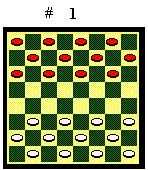
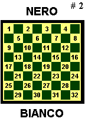
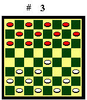
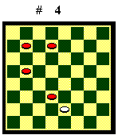
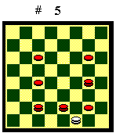
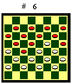

Le regole

Posizione iniziale
La partita di dama si svolge fra
due giocatori su una damiera di 64 caselle (32 bianche e 32 nere), disposta
con le caselle nere d'angolo (cantone) alla destra dei giocatori. Un giocatore
ha 12 pedine bianche, l'altro 12 pedine nere. Inizialmente ognuno schiera
le proprie pedine sulle caselle nere della damiera, come nel Diagramma
1. (Nei diagrammi di questo corso, per una migliore visualizzazione,
le caselle "nere" sono colorate in giallo e le pedine "nere"
in rosso).

Notazione
Per poter trascrivere le mosse, alle
caselle nere della damiera viene associato un numero da 1 a 32, a partire
dal cantone del Nero e proseguendo verso destra e verso il basso (Diagramma
2). Una mossa si indica scrivendo il numero della casella di partenza
e di arrivo separati da un trattino. Se la mossa è una presa, invece
del trattino si può usare una "x". Se una o più
prese sono univocamente detrminate, al posto di tutta la serie di prese
si può scrivere "X". L'indicazione di una mossa può
essere seguita dai seguenti segni di commento: "!" = mossa forte,
"!!" = mossa fortissima, "?" = mossa debole, "??"
= mossa debolissima, "!?" = mossa dubbia, "*" = mossa
forzata.

Mossa
Chi ha il Bianco muove per primo,
poi i giocatori muovono alternativamente. I pezzi possono occupare solo
le caselle nere della damiera. Un pezzo muove procedendo in diagonale di
una casella e occupandola, la mossa è possibile solo se la casella
di arrivo è libera (nel Diagramma 3 il Bianco ha mosso 23-19).
La pedina può muovere solo avanzando, la dama può anche indietreggiare.
Quando una pedina arriva all'ultima riga della damiera viene promossa e
diventa dama. Un tipo ulteriore di mossa è la presa.

Presa
Se un giocatore, dovendo muovere,
ha un pezzo a contatto con uno avversario che ha dietro una casella libera,
è obbligato a prenderlo (mangiarlo). La presa si effettua ponendo
il pezzo nella casa libera dietro il pezzo avversario e togliendo quest'ultimo
dalla damiera. Se in questa nuova posizione il pezzo può ancora
effettuare una presa, deve effettuarla subito, senza aspettare la mossa
successiva, e così via. Queste catture successive costituiscono
una unica presa multipla. Quando però una pedina arriva alla riga
di dama, deve fermarsi anche se potrebbe effettuare una presa all'indietro.
Al termine della presa la mossa passa all'avversario (nel Diagramma
4 la pedina bianca è obbligata a effettuare la presa multipla
27x18x9x2 e poi la mossa passa al Nero). Le pedine possono prendere solo
in avanti. Le dame possono prendere anche all'indietro. Le pedine non possono
mangiare le dame. Le dame possono mangiare sia dame che pedine.

Precedenza nelle prese
Se un giocatore può effettuare più di una presa è obbligato a prendere dalla parte in cui cattura il maggior numero di pezzi, a parità di questi, a prendere con il pezzo più forte, a parità di questo, a prendere dalla parte in cui cattura i pezzi di maggior valore (mangiare il più con il più), a parità di questo, a prendere dalla parte dove incontra prima i pezzi più forti. A parità di tutte queste condizioni, può effettuare la presa che preferisce (nel Diagramma 5 la dama bianca è obbligata a effettuare la presa 31x22x13x6). Esempi:
|
|
|
|
|
|
|

Vincita
Un giocatore vince la partita se
mangia tutti i pezzi avversari; se li chiude in modo che l'avversario,
al suo turno, non possa muovere; se l'avversario, giudicandosi in posizione
perdente, abbandona (nel Diagramma 6 il Bianco muove e, pur non
essendo stata catturata nemmeno una pedina, non potendo effettuare alcuna
mossa, perde).
Patta
Una partita è patta se entrambi i giocatori, giudicando impossibile la vincita, si accordano in tal senso. Se manca l'accordo, un giocatore può richiedere il conteggio delle 40 mosse (chiamare le mosse). Vengono allora contate le mosse del giocatore richiedente e, se al termine della 40esima nessuno ha vinto, la partita è dichiarata patta. Il conteggio delle mosse viene ricominciato da capo ogni volta che viene mossa una pedina o che viene effettuata una presa.